无ROOT权限在服务器安装CUDA和CUDNN教程

1. 这篇教程是做什么的？
在科研工作中，普通用户在服务器上需要使用的 CUDA Toolkit 版本和服务器上已经安装的 CUDA Toolkit 版本不一定一致，在没有 ROOT 权限的情况下，也可以安装需要的 CUDA Toolkit 版本和对应的 cuDNN，本文的实践教程是在 Ubuntu 上。
⚠️注意：非 ROOT 权限不应该对驱动（CUDA Driver）进行任何修改（也无法修改），如果驱动版本过低，请联系服务器管理员。
1.1 使用服务器上已有的 CUDA Toolkit 和 cuDNN
常规服务器应该会有已安装的 CUDA Toolkit 和 cuDNN，一般位于 /usr/local/ 目录下，使用时仅需要配置环境变量即可！
一般来说将下方命令添加到 ~/.bashrc 文件中，CUDA_HOME 环境变量就是 CUDA 对应位置（如果有多个版本，可以自行选择启用哪个版本）。
export CUDA_HOME=/usr/local/cuda
export CPATH=$CUDA_HOME/include:$CPATH
export PATH=$CUDA_HOME/bin:$PATH
export LD_LIBRARY_PATH=$CUDA_HOME/lib64:$LD_LIBRARY_PATH
export LIBRARY_PATH=$CUDA_HOME/lib64:$LIBRARY_PATH
⚠️注意：配置完环境变量后需要重新登陆账户或者 source ~/.bashrc 后才能生效。
2. 无 ROOT 权限安装 CUDA Toolkit 和 cuDNN
2.1 安装 CUDA Toolkit
首先确定你需要下载的 CUDA Toolkit 版本，然后在官网下载对应版本的 CUDA，官网链接：CUDA Toolkit Archive 。
这里以 CUDA Toolkit 12.1.0 为例，根据服务器的架构以及版本进行选择，最后的 Installer Type 选择 runfile(local) 。
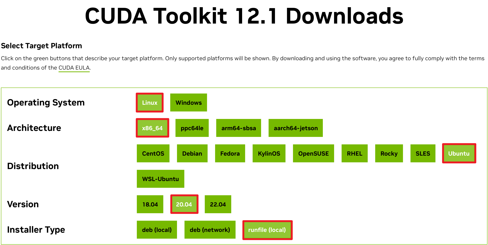
图 1. CUDA 安装包下载页面截图1在选择完毕之后下方会出现对应的下载命令，我们仅运行 wget 命令（红框中圈出的命令）下载对应文件，由于没有 ROOT 权限，所以无法 sudo 运行该脚本。
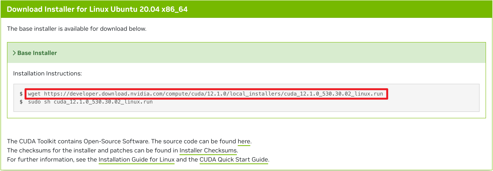
图 2. CUDA 安装包下载页面截图2同时由于我们没有 ROOT 权限，所以安装的 CUDA Toolkit 不能放置在 /usr/local/ 目录中，我们需要提前创建一个安装 CUDA Toolkit 的目录，在之后执行安装文件时会用到，如：/home/gavin/environment/cuda-12.1。
之后通过下方的命令给该脚本添加运行权限，然后开始运行安装脚本（可能会卡）：
chmod +x cuda_*.run
sh cuda_*.run
由于我们下载的 CUDA 安装包内同时包含 CUDA Driver 和 CUDA Toolkit，所以这里会有这个提示，我们不安装驱动，没有影响，选择 Continue。
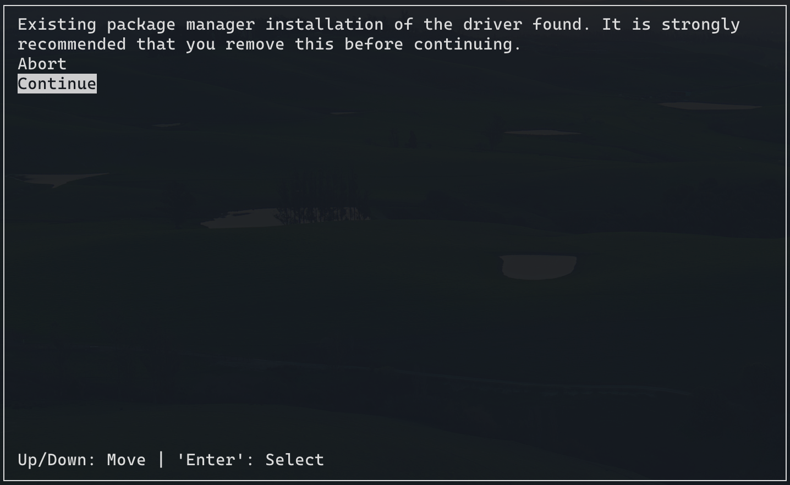
图 3. CUDA 安装页面截图1输入 accept 同意用户协议（也没法不同意）
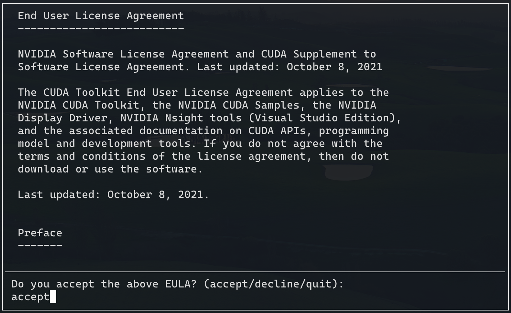
图 4. CUDA 安装页面截图2使用回车将除 CUDA Toolkit 12.1 以外的全部取消勾选，之后不要选 Install ，选择 Options 。
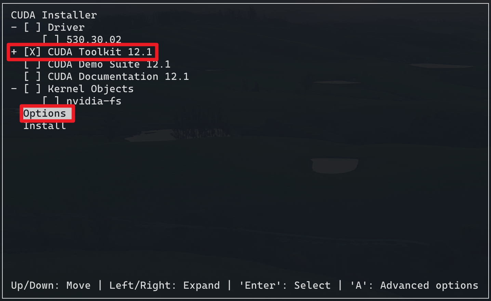
图 5. CUDA 安装页面截图3选择 Toolkit Options 进行设置。
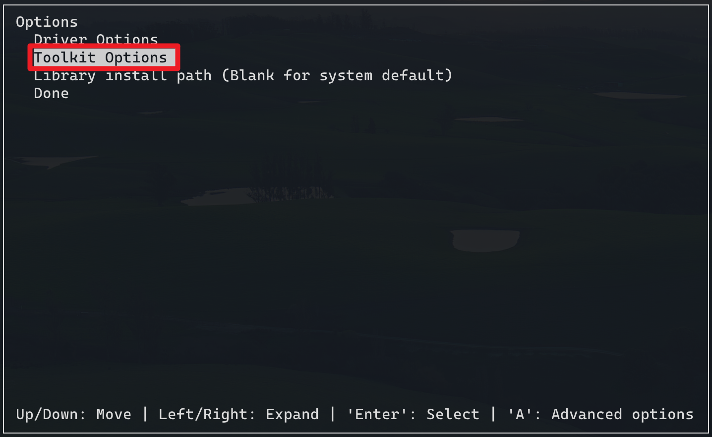
图 6. CUDA 安装页面截图4取消选择所有选项，并且更改安装路径（选择 Change Toolkit Install Path ）。
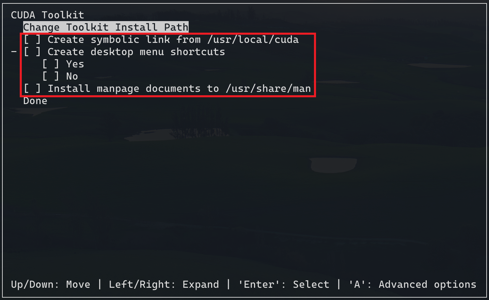
图 7. CUDA 安装页面截图5将前方提前创建好的目录填写进去（建议复制粘贴，不会出错，pwd 可以获得当前位置的绝对路径），之后回车确认，
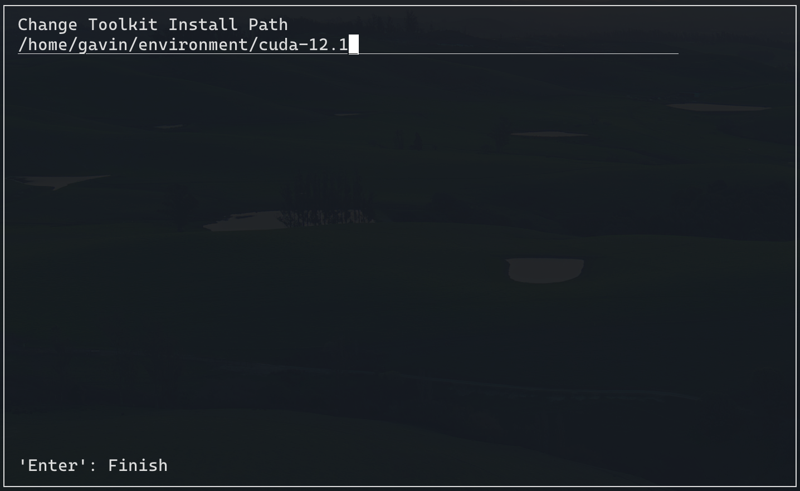
图 8. CUDA 安装页面截图6然后一路选择 Done 回退到如图5的界面选择 Install ，运行结束后会有如下信息。
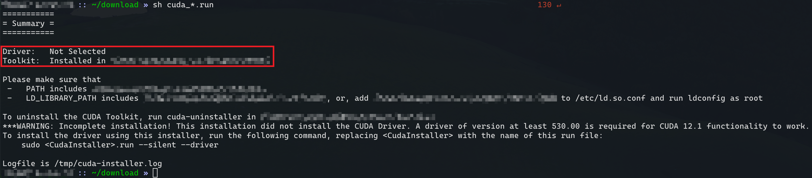
图 9. CUDA 安装页面截图72.2 启用刚刚安装的 CUDA Toolkit
配置环境变量，如同 1.1 章节的操作。
将下方命令添加到 ~/.bashrc 文件中，CUDA_HOME 环境变量就是 CUDA 对应位置（如果有多个版本，可以自行选择启用哪个版本）。
export CUDA_HOME=/home/gavin/environment/cuda-12.1 # 选择你安装的路径
export CPATH=$CUDA_HOME/include:$CPATH
export PATH=$CUDA_HOME/bin:$PATH
export LD_LIBRARY_PATH=$CUDA_HOME/lib64:$LD_LIBRARY_PATH
export LIBRARY_PATH=$CUDA_HOME/lib64:$LIBRARY_PATH
⚠️注意：配置完环境变量后需要重新登陆账户或者 source ~/.bashrc 后才能生效。
在终端中运行 nvcc -V 后，输出的信息应该匹配你所安装的 CUDA Toolkit 版本。
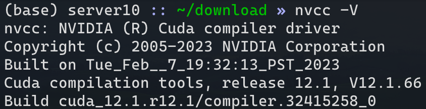
图 10. 环境变量配置完毕后检测2.3 安装对应版本的 cuDNN
根据你安装的 CUDA Toolkit 版本在 cuDNN Archive 中选择对应的 cuDNN 包。
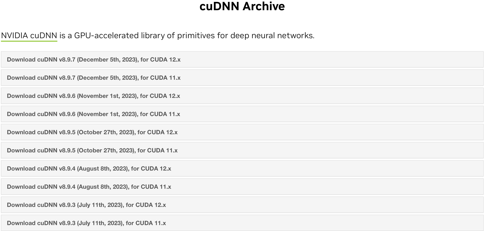
图 11. cuDNN Archive 网页截图这里选择 Linux x86_64 (Tar) 包，不选择 Deb 包，因为我们是无 ROOT 权限自定义安装的路径，而且 cuDNN 的安装非常简单，直接拷贝文件就可以了。
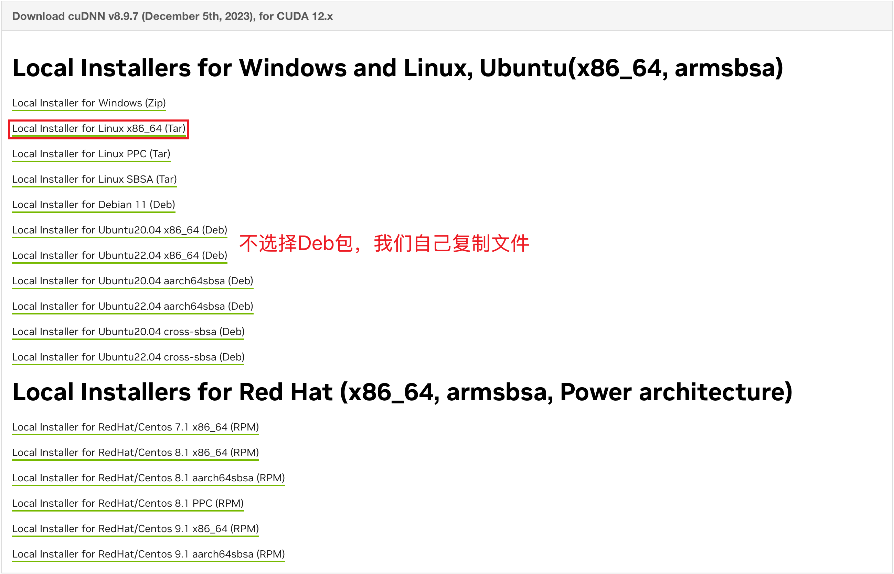
图 12. cuDNN 下载对应 Tar 包下载后使用下方命令将压缩包解压：
xz -d cudnn-*-archive.tar.xz
tar -xvf cudnn-*-archive.tar
之后复制对应文件到 CUDA Toolkit 安装目录
cp cudnn-*-archive/include/cudnn*.h $CUDA_HOME/include
cp -P cudnn-*-archive/lib/libcudnn* $CUDA_HOME/lib64
chmod a+r $CUDA_HOME/include/cudnn*.h $CUDA_HOME/lib64/libcudnn*
2.4 ⚠️注意 PyTorch 无法查看 CUDA 和 cuDNN 版本
这个其实显示的是当前 PyTorch 支持的最高 CUDA 版本，并不是当前的 CUDA 版本号。
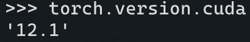
图 13. torch.version.cuda 的输出截图这个其实显示的是 PyTorch 内部捆绑的 cuDNN 版本，而不是本地安装的 cuDNN 版本。输出的 90100 则表示内部捆绑的 cuDNN 版本为 9.1.0 。
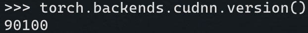
图 13. torch.backends.cudnn.version() 的输出截图